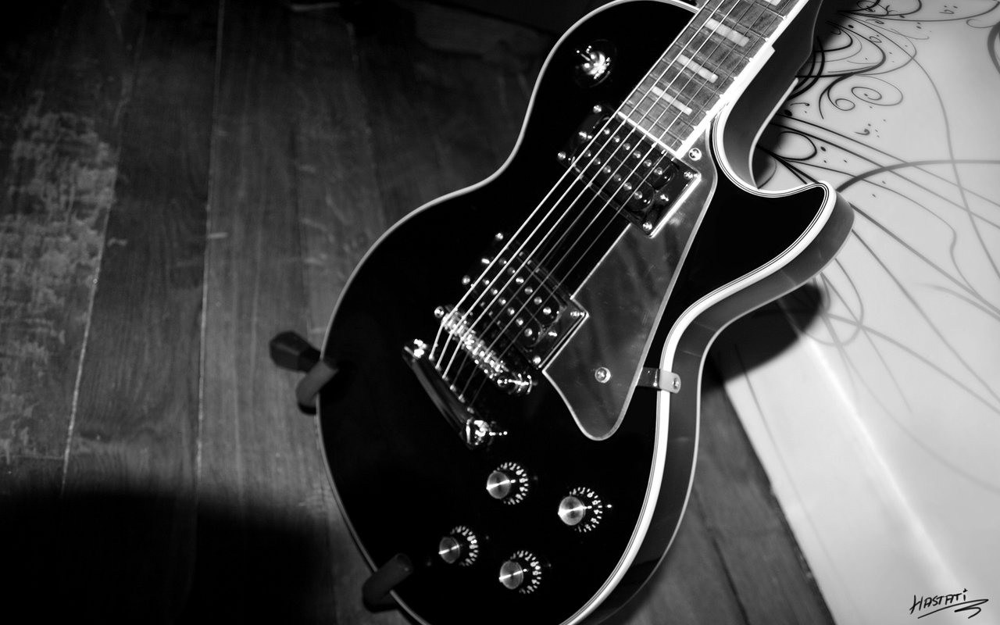

Gibson Les Paul

- First Appearance: 1952
- Body type: Solid
- Neck joint: Set Neck
- Body: Mahogany
- Fret: Rosewood
Arguably the most iconic guitar of all time. This was developed by the man it was named after, the one and only Mr. Les Paul. It has sat in the hands of some of the greatest players of all time. Who? Well theres Slash, Jimmy Page, Johnny Marr, Duane Allman, Eric Clapton, Pete Townshend just to name but a few.